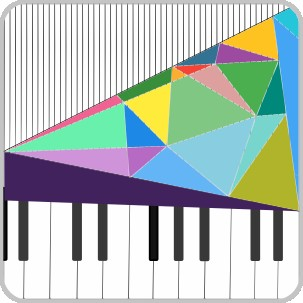

 A piano player whose skills might not be top-notch but enjoys listening to various genres of music. Primarily indulges in classical music, preferring emotionally rich interpretations over technical prowess. Favorite composers include Beethoven, Chopin, and Joe Hisaishi. As for performers, admires Pogorelić, Horowitz, Furtwängler, etc.


|